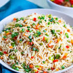

mushroom friedrice

Mushroom Fried Rice is a flavorful Indo-Chinese dish made with fragrant rice, stir-fried mushrooms, vegetables, soy sauce, and aromatic spices
read more
Vegetable Biryani
Fragrant basmati rice layered with spiced mixed vegetables, cooked in traditional dum style.
read more
panner fried rice
Paneer Fried Rice is a delicious Indo-Chinese fusion dish made with fragrant rice, stir-fried paneer cubes, colorful vegetables, soy sauce, and spices.
read more
Non-Vegetarian Recipes
Chicken friedrice
A spicy and flavorful curry made with tender chicken pieces cooked in a rich onion-tomato gravy.
read more
prawn Friedrice
It’s a quick and satisfying seafood meal with bold flavors and a delightful texture..
read more
mix FriedRice
Hard-boiled eggs simmered in a spicy onion-tomato masala, best served with chapati or rice.
read more
 Paneer Fried Rice is a delicious Indo-Chinese fusion dish made with fragrant rice, stir-fried paneer cubes, colorful vegetables, soy sauce, and spices.
read more
Paneer Fried Rice is a delicious Indo-Chinese fusion dish made with fragrant rice, stir-fried paneer cubes, colorful vegetables, soy sauce, and spices.
read more
 A spicy and flavorful curry made with tender chicken pieces cooked in a rich onion-tomato gravy.
A spicy and flavorful curry made with tender chicken pieces cooked in a rich onion-tomato gravy.